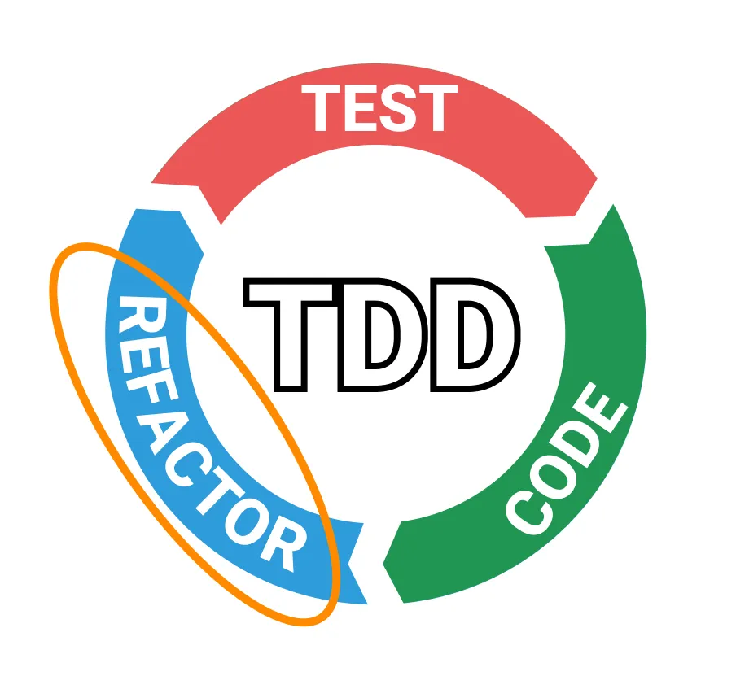
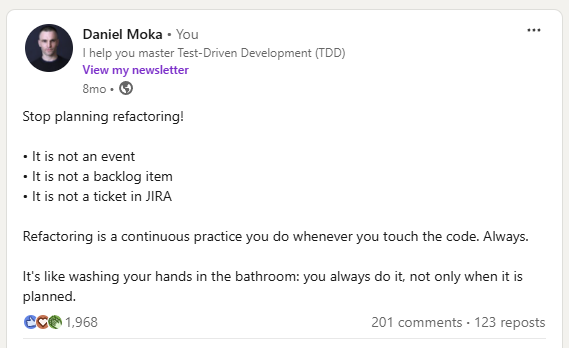
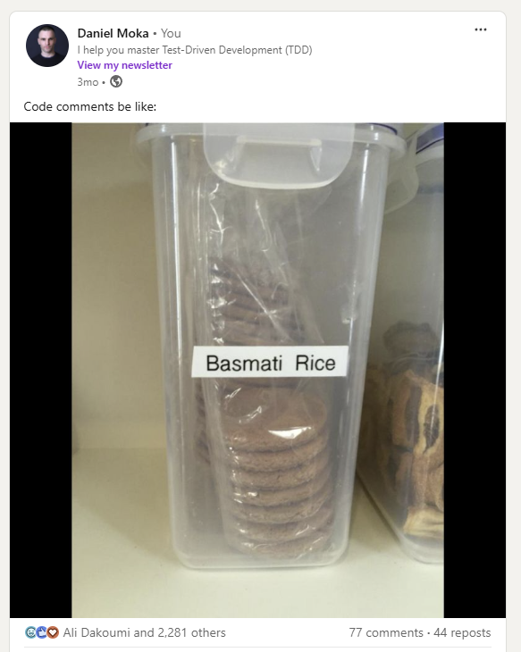
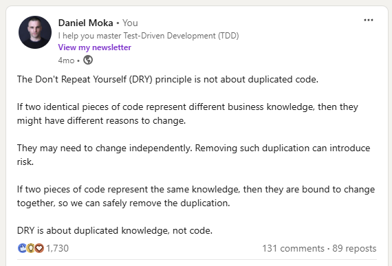
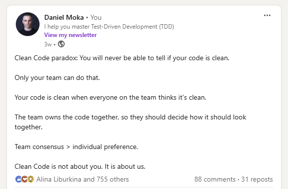

class: center, middle # Refactor like a PRO --- class: center, middle #<span class="red-bg">Why refactoring is crucial in TDD?</span> --- class: center, middle #<span class="green-bg">TDD is about growing the design by practicing continuous refactoring.</span> <div style="text-align: center;">  </div> --- # What is refactoring? <div style="text-align: center;">  </div> --- # What is refactoring? <div style="text-align: center;"> <img src="./assets/never-ask-permission.png" alt="Example Image"> </div> --- # What is refactoring? Do you need permission? Refactoring != rewriting Refactoring is a type of rewriting --- # What is refactoring? Refactoring - change internal structure without altering APIs - simplify design - improve namings - identify and remove code smells - use design patterns for common problems - improve testability and maintainability Rewriting: - Change high-level structure - Can come with API changes - More time consuming than refactoring --- class: center, middle # 7 tips to become PRO in refactoring --- # 1. Do aggressive refactoring at small scales Two common mistakes: - Refactoring at a large scale all at once - Not running tests continuously Agressive refactoring: 1. Refactor a little piece of code 2. Run all your tests 3. Repeat 1-2. until your code is in a good shape ??? When I work with developers, I notice two common mistakes related to refactoring: --- # 2. Master the hotkeys of your IDE Most common refactoring hotkeys: - Rename - Move line - Inline variable - Extract to method - Introduce variable - Introduce parameter - Change function signature --- # 3. Do comprehensive testing before refactoring <div class = "green-bg", style="text-align: center;"> Only refactor code that is covered by tests </div> - full code coverage - full behaviour coverage - full confidence <div class = "red-bg", style="text-align: center;"> Anything less increases the chances of introducing bugs. </div> --- # 4. Turn comments into components <div style="text-align: center;">  </div> --- # 4. Turn comments into components <div style="text-align: center;"> </div> --- # 4. Turn comments into components Code comments are code smells: - ❌ They are never compiled or executed - ❌ They become easily outdated and rotten - ❌ If used extensively, nobody reads them Exceptions: - ✅ Explaining the why - ✅ API doc generation - ✅ Revealing implicit behaviors <div style="text-align: center;"> <span class="green-bg">Dont write comments. Use intention revealing names instead.</span> </div> --- # 5. Follow the Rule of Three Strike balance between premature optimization and excessive duplication 1. Write a piece of code. 2. Write the same piece of code again. Resist the urge to generalize. 3. Write the same piece of code again. Now you have a better understanding of how to generalize it and you can go ahead and do it. --- class: center # <span class="red-bg"> Don't Repeat Yourself (DRY) is not about code</span> <div style="text-align: center;">  </div> --- # DRY is about knowledge ``` public class Basket { private List<string> products = new List<string>(); public void AddProduct(string product) { if (products.Count == 3) { throw new Exception("Max 3 products allowed"); } products.Add(product); } } ``` --- # DRY is about knowledge ``` public class Shipment { private List<string> products = new List<string>(); public void AddProduct(string product) { if (products.Count == 3) { throw new Exception("Max 3 products allowed"); } products.Add(product); } } ``` --- # DRY is about knowledge ``` public abstract class ProductContainer { protected List<string> products = new List<string>(); public void AddProduct(string product) { if (products.Count == 3) { throw new Exception("Max 3 products allowed"); } products.Add(product); } } public class Basket : ProductContainer {} public class Shipment : ProductContainer {} ``` --- # DRY is about knowledge What about the business rules? Rule for Basket: - Supply of products are limited, so we want to give our customer equal opportunity to buy Rule for Shipment: - Products can be flammable so, not allowed to have more than three items <span class="red-bg">These rules might change independently! --- class: center, middle ## <span class="green-bg">DRY is about duplicated knowledge, not code</span> --- class: center, middle # Duplication is cheaper than wrong abstraction --- # 6. Don't mix refactoring with changing behavior <div style="text-align: center;"> </div> --- # 7. Keep personal preferences in check <div style="text-align: center;">  </div>